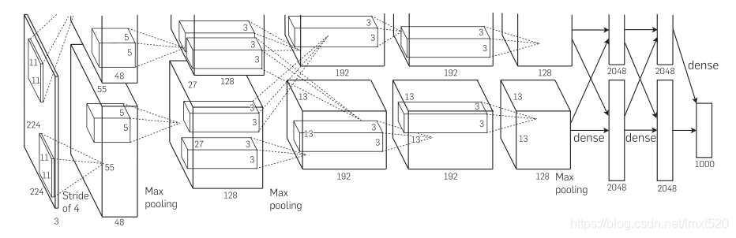
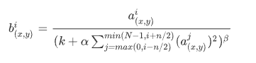
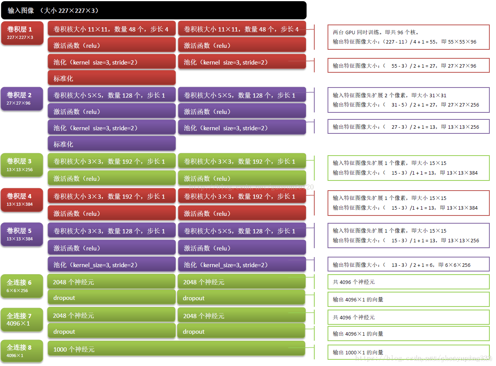

【经典卷积网络】AlexNet网络解析
原论文名：《ImageNet Classification with Deep Convolutional Neural Networks》

alexnet网络中引入了
Relu激活函数，
标准化LRN（Local Response Normalization），
Dropout，覆盖的池化操作(Overlapping Pooling) 等
1.ReLu激活函数
alexnet中较lenet更为先进的是使用ReLu作为激活函数来替代sigmoid，并证明了效果优于sigmoid。在此之前主要是通过sigmod来计算节点，该方法存在梯度消失和梯度爆炸的风险。relu能很大程度上解决这个问题，现在对relu 有好多改进， 如prelu ，lrelu。主要是针对x<0 的情况。
2.Local Response Normalization（局部响应归一化）
在神经网络中，我们用激活函数将神经元的输出做一个非线性映射，但是tanh和sigmoid这些传统的激活函数的值域都是有范围的，但是ReLU激活函数得到的值域没有一个区间，所以要对ReLU得到的结果进行归一化。也就是Local Response Normalization。局部响应归一化的方法如下面的公式

𝑎𝑥,𝑦𝑖 代表的是ReLU在第i个kernel的(x, y)位置的输出，n表示的是𝑎𝑥,𝑦𝑖 的邻居个数，N表示该kernel的总数量。𝑏𝑥,𝑦𝑖表示的是LRN的结果。ReLU输出的结果和它周围一定范围的邻居做一个局部的归一化。总之就可以想象为在多个核上进行的归一化处理。
3.Dropout
Dropout也是经常说的一个概念，能够比较有效地防止神经网络的过拟合。 相对于一般如线性模型使用正则的方法来防止模型过拟合，而在神经网络中Dropout通过修改神经网络本身结构来实现。对于某一层神经元，通过定义的概率来随机删除一些神经元，同时保持输入层与输出层神经元的个人不变，然后按照神经网络的学习方法进行参数更新，下一次迭代中，重新随机删除一些神经元，直至训练结束。
4.重叠最大池化
一般的池化层因为没有重叠，所以pool_size 和 stride一般是相等的，例如8×8的一个图像，如果池化层的尺寸是2 × 2，那么经过池化后的操作得到的图像是 4 ×4大小，这种设置叫做不覆盖的池化操作，如果 stride < pool_size, 那么就会产生覆盖的池化操作，这种有点类似于convolutional化的操作，这样可以得到更准确的结果。在top-1，和top-5中使用覆盖的池化操作分别将error rate降低了0.4%和0.3%。论文中说，在训练模型过程中，覆盖的池化层更不容易过拟合。
5.数据增强
通过裁剪旋转等方式增强了训练数据

1 | # -*- coding:utf-8 -*- |